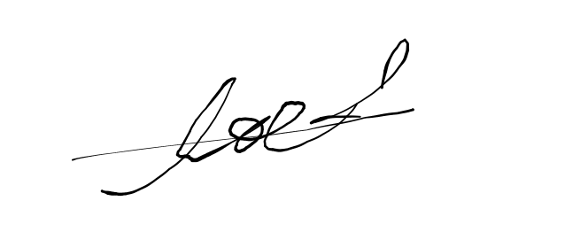

Живой процесс приготовления кофе.
У нас есть Видео создание
Кофейка
Вы здесь для того, чтобы перечислить свои достоинства
Фонд Spidvagon доставляет нам наисвежайшие кофейные зерна, из-за чего у нас и получается наисвежайшее кофе. Все работники Jostar Coffee отбирались самые лучшие и опытные.
Подробная информация об общей странице

Недавно семья Jostaroth надоело сражатся с Антеганистами, решили от дахнуть содать бизнес. Создали кофейню причина почему кофейня из-за Тётушки Эриной. Она любит сидеть где спокойненько, смотреть в окно наблюдая о происходящем и задумываясь о своей замечательной жизни проводящее в месте с внучком Джозефам Джостаром.
Ну крнечно не обошлось снашем САМОЙ КЛАСНОЙ И КРАСИВОЙ ВАЙВОЙ SPIDVAGON. И его невтеной компании Spidvagon. Даже после смерти Spidvagona, он все равно продолжает нам помогать в финансовом положении.
Ну и конечно не забываем о Рудольф Фон Штрохайм (ルドル・フォン・シュトロハイム Rudoru fon Shutorohaimu?) — второстепенный союзник Боевого стремления. Штрохайм нанел из своей элитной армеи замечатьльных барист.

Ну и на последок Тонио Труссарди наш замечательный повар и кондитер. Приготавливает с ног шебательные дисерты. Что клиенты и выпрашивают секретный рецепт Нашего Тонио. Но рецепт вы ни каким образом не получите, ведь..... Тонио сам по себе шеф повар одиночька сам придумывает рецепты и добавляет к ним самую главную изюменку кто понел тот понел.